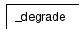
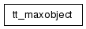
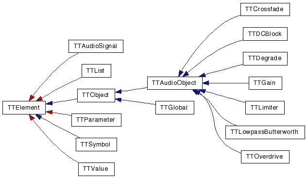

Main Page
Classes
Files
Class List
Class Hierarchy
Class Members
TTBlue Graphical Class Hierarchy
Go to the textual class hierarchy



Generated on Sun Jan 6 12:45:38 2008 for TTBlue by
1.5.1

 1.5.1
1.5.1